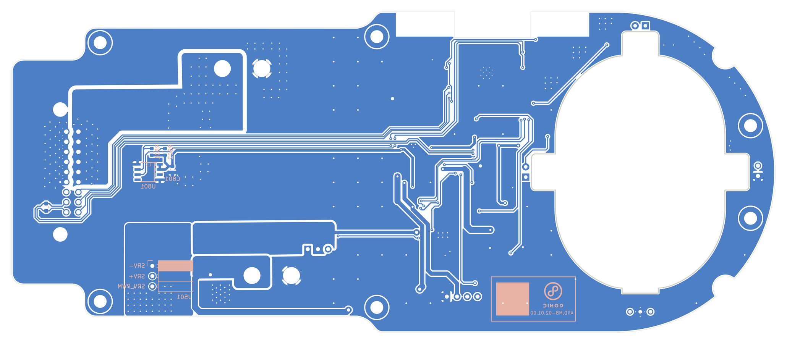
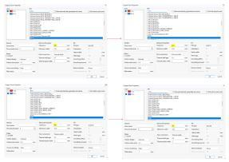
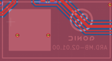
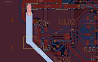

Improve the copper.
Keep the design intact.
GPT6 edited the updated board’s ground fill, stitching and selected power traces while retaining the schematic, outline, components and placement.
Accepted changes.
| Change | Before → after |
|---|---|
| Main ground clearance | 0.8 → 0.3 mm |
| Ground vias | 299 → 339 total board vias |
| +5V_1 trace segments | 1.0 → 1.5 mm on 12 segments / 77.04 mm |
| +5V_2 trace segments | 1.0 → 1.5 mm on 6 segments / 27.60 mm |
| +UBEC_OUT segments | 0.8 → 1.2 mm on 4 segments / 9.22 mm |
| J301 ground connection | Thermal → solid zone connection |
Seven proposed width increases were rejected by DRC and restored. Wider segments do not establish a uniformly wider current path.
Execution and verification.
Native KiCad files were edited using KiCad 9’s board engine and opened for visual review. Placement, pad geometry, net assignments, outline and all schematic files were verified unchanged.
Top copper.


Bottom copper.


Assembled 3D.


Step 2 pairs use the same view, scale and layers. Bottom views are both shown from above without mirroring.
Developer’s marked examples.
Original small screenshots from the developer PDF; use the full-size board images above for detailed inspection.



Download Step 2 comparison.
Includes both native projects, comparison images, change records, PDF reports and developer notes. Inherited custom libraries may require the original library environment.
Download ZIP · 7.9 MB